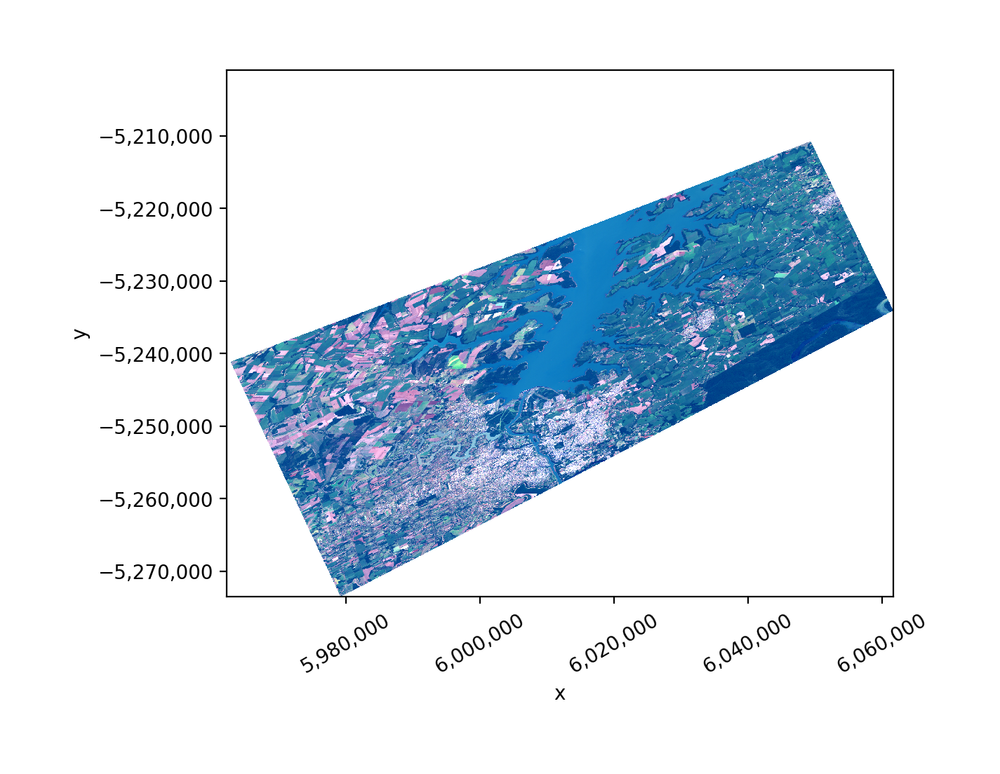
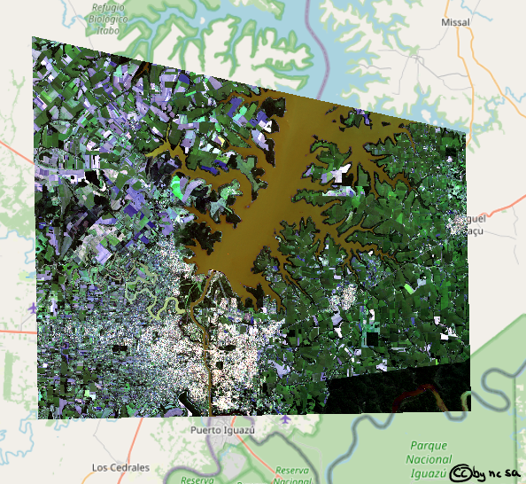

Learning Objectives
Reproject a raster with rasterio
Reproject a raster with geowombat
Reproject Rasters w. Rasterio and Geowombat#
Reprojecting a Raster with Geowombat#
Far and away the easiest way to handle raster data is by using geowombat. Here’s an example of quickly and easily reprojecting a three band landsat image, and writing it to disk.
In order to reproject on the fly we are going to open the raster using gw.config.update(). The configuration manager allows easy control over opened raster dimensions, alignment, and transformations. All we need to do is pass a ref_crs to the configuration manager. We can also use the resampling method when we open the image, by default it will be nearest, but you can also choose one of [‘average’, ‘bilinear’, ‘cubic’, ‘cubic_spline’, ‘gauss’, ‘lanczos’, ‘max’, ‘med’, ‘min’, ‘mode’, ‘nearest’].
Which resampling method should I use?
When we reproject, the output pixel centers rarely line up with the input pixels, so each new pixel value has to be estimated from its neighbors. The resampling method controls how that estimate is made. The most important question is whether your raster is categorical (land-cover classes, where inventing an in-between value is meaningless) or continuous (reflectance, elevation, temperature).
Method |
Best for |
What it does |
|---|---|---|
|
categorical (default) |
copies the value of the single closest input pixel — never invents new values |
|
categorical |
assigns the most common value among the surrounding pixels |
|
continuous |
distance-weighted average of the 4 nearest pixels — smooth and fast |
|
continuous |
weighted average over the 16 nearest pixels using a cubic kernel — smoother than bilinear |
|
continuous |
fits a smooth spline through the surrounding pixels; smoother still, but can overshoot near sharp edges |
|
downsampling continuous |
mean of all input pixels that fall under the output pixel |
|
continuous |
high-quality sinc-based filter; sharpest result but slowest |
The difference between cubic and cubic_spline is the interpolating curve: cubic applies a fixed convolution kernel over a 4×4 window, while cubic_spline fits a piecewise polynomial (a spline) that passes smoothly through the points — see this walkthrough of cubic spline interpolation. Rule of thumb: use nearest for categorical rasters and bilinear or cubic for continuous ones.
import geowombat as gw
proj4 = "+proj=aea +lat_1=20 +lat_2=60 +lat_0=40 +lon_0=-96 +x_0=0 +y_0=0 +datum=NAD83 +units=m +no_defs"
image = "../data/LC08_L1TP_224078_20200518_20200518_01_RT.TIF"
with gw.config.update(ref_crs=proj4):
with gw.open(image, resampling="nearest") as src:
src.gw.save(
"../temp/LC08_20200518_aea.tif",
overwrite=True,
)
Let’s take a look, remember from earlier that this image is stored as green, blue, red (rather than red, green, blue), so we will use .sel(band=[3,2,1]) to put them back in the right order.
import matplotlib.pyplot as plt
fig, ax = plt.subplots(dpi=200)
image = "../temp/LC08_20200518_aea.tif"
with gw.open(image) as src:
src.where(src != 0).sel(band=[3, 2, 1]).gw.imshow(robust=True, ax=ax)
plt.tight_layout(pad=1)

Too easy? Want something more complex? Try the same thing with Rasterio. Yes, there will be a little matrix algebra.
Calculate_default_transform Explained#
How do we reproject a raster? Before we get into it, we need to talk some more… about calculate_default_transform. calculate_default_transform allows us to generate the transform matrix required for the new reprojected raster based on the characteristics of the original and the desired output CRS. Note that the source (src) is the original input raster, and the destination (dst) is the outputed reprojected raster.
First, remember that the transform matrix takes the following form (review affine transforms here):
Now let’s calculate the tranform matrix for the destination raster:
import numpy as np
import rasterio
from rasterio.warp import reproject, Resampling, calculate_default_transform
dst_crs = "EPSG:3857" # web mercator(ie google maps)
with rasterio.open("../data/LC08_L1TP_224078_20200518_20200518_01_RT.TIF") as src:
# transform for input raster
src_transform = src.transform
# calculate the transform matrix for the output
dst_transform, width, height = calculate_default_transform(
src.crs, # source CRS
dst_crs, # destination CRS
src.width, # column count
src.height, # row count
*src.bounds, # unpacks outer boundaries (left, bottom, right, top)
)
print("Source Transform:\n",src_transform,'\n')
print("Destination Transform:\n", dst_transform)
Source Transform:
| 30.00, 0.00, 717345.00|
| 0.00,-30.00,-2776995.00|
| 0.00, 0.00, 1.00|
Destination Transform:
| 33.24, 0.00,-6105300.09|
| 0.00,-33.24,-2885952.71|
| 0.00, 0.00, 1.00|
Notice that in order to keep the same number of rows and columns that the resolution of the destination raster increased from 30 meters to 33.24 meters. Also the coordinates of the upper left hand corner have shifted (check \(\Delta x, \Delta x\)).
Reprojecting a Raster with Rasterio#
Ok finally!
dst_crs = "EPSG:3857" # web mercator(ie google maps)
with rasterio.open("../data/LC08_L1TP_224078_20200518_20200518_01_RT.TIF") as src:
src_transform = src.transform
# calculate the transform matrix for the output
dst_transform, width, height = calculate_default_transform(
src.crs,
dst_crs,
src.width,
src.height,
*src.bounds, # unpacks outer boundaries (left, bottom, right, top)
)
# set properties for output
dst_kwargs = src.meta.copy()
dst_kwargs.update(
{
"crs": dst_crs,
"transform": dst_transform,
"width": width,
"height": height,
"nodata": 0, # replace 0 with np.nan
}
)
with rasterio.open("../temp/LC08_20200518_webMC.tif", "w", **dst_kwargs) as dst:
# iterate through bands
for i in range(1, src.count + 1):
reproject(
source=rasterio.band(src, i),
destination=rasterio.band(dst, i),
src_transform=src.transform,
src_crs=src.crs,
dst_transform=dst_transform,
dst_crs=dst_crs,
resampling=Resampling.nearest,
)
The result is shown in Figure 67.


Fig. 67 The Landsat scene reprojected to Web Mercator (EPSG:3857) with Rasterio. Compare it to the geowombat output at the top of the page — both take the same source image and warp it onto a new coordinate grid, but here we built the destination transform by hand with calculate_default_transform. The black wedges along the edges are nodata (0) pixels: reprojection rotates and stretches the image relative to its original rectangular footprint, so the corners of the new raster fall outside the area covered by the original scene.#